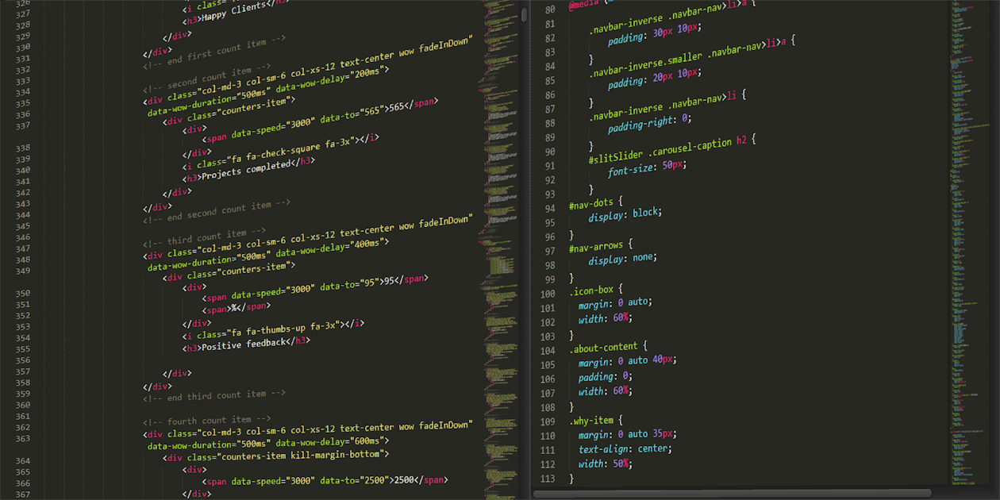

Building Your First Web Application: A Step-by-Step Guide
Sydney Carton | Mar 28
Likes: 256
Likes: 256
Understanding the Fundamentals of Object-Oriented Programming
Sydney Carton | Jan 11
Likes: 180
Likes: 180

Best Practices for Writing Clean and Maintainable Code
Sydney Carton | Apr 05
Likes: 304
Likes: 304
How to Improve Your Software Development Skills: Tips and Tricks
Sydney Carton | May 08
Likes: 500
Likes: 500
How to Improve Your Software Development Skills: Tips and Tricks
Sydney Carton | Jun 18
Likes: 211
Likes: 211

How to Improve Your Software Development Skills: Tips and Tricks
Sydney Carton | Nov 21
Likes: 25
Likes: 25